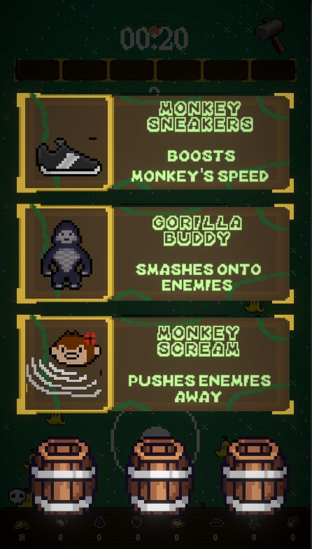
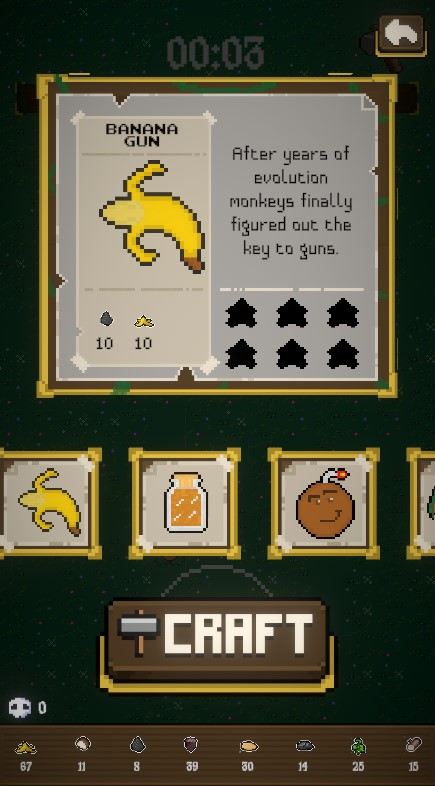

Ons idee was om een verslavende shooter te maken waarbij je wil blijven spelen om beter te worden.
Het spel van ons is gebaseerd op het spel Vampire Survivors. Dat betekent dat onze game een top-down 2D game is waarbij er steeds meer enemy's op je afkomen.
Het doel is om zo lang mogelijk te overleven. Hiervoor heb je natuurlijk items en wapens voor nodig.
Items kan je krijgen als je level up gaat door de paarse stenen op te pakken. Als je eenmaal level up bent kun je uit verschillende items kiezen:

Hier kan je items kiezen die je het makkelijker maken.
Er zijn meerdere items en elke keer als je level up gaat dan krijg je 3 random items waar je uit kan kiezen.
Voor de wapens hebben we ook een uniek systeem namelijk een crafting systeem. Dit is ook gelijk onze USP ( Unique Selling Point )
Deze moet je hebben want er moet een reden zijn waarom mensen eerder onze game zouden spelen dan Vampire Survivors.
De enemy's droppen materials zoals je links ziet. Deze kan je oppakken en hiermee kan je een wapen maken. Er zijn verschillende wapens die allemaal andere materials hebben:
